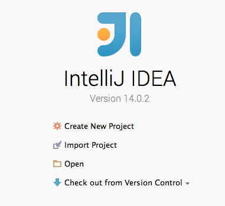
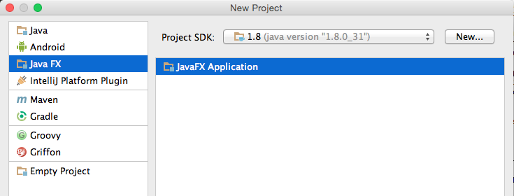
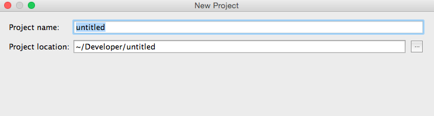
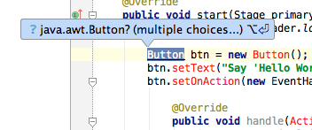
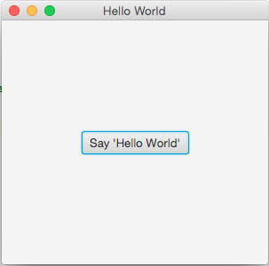

This page shows how to create a sample Hello World application, as is done by most programmers when trying to learn how to use a new language or tool.
1. To begin creating a Hello World project in JavaFX, first click "Create New Project" in the "Welcome to IntelliJ IDEA" page as seen below. If something is already open, from the File menu, choose "New Project".
2. Next select "JavaFX" from the side panel, and "JavaFX Application" on the right side. Make sure there is a Project SDK selected, which should be the one specified when installing IntelliJ. If your project requires a different SDK, select it from the dropdown menu if it is already specified or else click "new", and navigate to the downloaded SDK.
3. Next, specify a project name and location, and click "Next".
4. As you can see, the project is created with controller.java, Main.java, and sample.fxml. Open Main.java and the following code should be automatically generated.
package sample;
import javafx.application.Application;
import javafx.fxml.FXMLLoader;
import javafx.scene.Parent;
import javafx.scene.Scene;
import javafx.stage.Stage;
public class Main extends Application {
@Override
public void start(Stage primaryStage) throws Exception{
Parent root = FXMLLoader.load(getClass().getResource("sample.fxml"));
primaryStage.setTitle("Hello World");
primaryStage.setScene(new Scene(root, 300, 275));
primaryStage.show();
}
public static void main(String[] args) {
launch(args);
}
}
1. In the start() method of Main.java, delete the 'Parent = root..' line, and add the following code below at the beginning of the method to create a button.
Button btn = new Button();
btn.setText("Say 'Hello World'");
btn.setOnAction(new EventHandler() {
@Override
public void handle(ActionEvent event) {
System.out.println("Hello World!");
}
});
StackPane stack = new StackPane();
stack.getChildren().add(btn); 2. Some classes were probably not imported, so Button ActionEvent, and StackPane are probably red. Hover over them with your mouse and you should be able to automatically have IntelliJ import for you. Choose javafx... when prompted to choose between two different pre-existing classes.
3. Lastly, at the bottom of the method instead of setting the previous 'root' we want to set the new Stack we created as seen below.
primaryStage.setScene(new Scene(stack, 300, 275));Now the start method should look like this:
@Override
public void start(Stage primaryStage) throws Exception{
Parent root = FXMLLoader.load(getClass().getResource("sample.fxml"));
Button btn = new Button();
btn.setText("Say 'Hello World'");
btn.setOnAction(new EventHandler() {
@Override
public void handle(ActionEvent event) {
System.out.println("Hello World!");
}
});
StackPane stack = new StackPane();
stack.getChildren().add(btn);
primaryStage.setTitle("Hello World");
primaryStage.setScene(new Scene(stack, 300, 275));
primaryStage.show();
} 4. In the top right hand corner of IntelliJ click the green "play" button to run the application.
It's important to note that this hello world example doesn't make use of FXML, which is important. For more information about basic FXML, check out the link here. To find out more about JavaFX be sure to check out Part 1: Scene Builder where you can find out how to create a simple JavaFX application completely from start to finish.